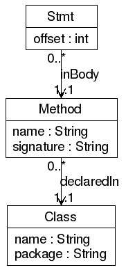

ProBe Polymorphic Call Sites Data Format
Specification
Schema

Nodes
Stmt
Each Stmt node represents an invokevirtual or invokeinterface bytecode
instruction in the program. The offset attribute is the bytecode offset
of the instruction in the method in which it appears. A Stmt node
appears in the ProBe graph if the corresponding invoke instruction
invokes at least two different methods.
Method
Each Method node represents a method in the program. The name attribute
specifies the name of the method. The signature attribute specifies the
parameters and return type (but not the name) of the method in the same
format as they are stored in the a Method Descriptor in the Java class
file format (see The
Java Virtual Machine Specification, section 4.3.3).
Class
Each Class node represents a class in the program. The name attribute
specifies the name of the class, not including the package. For inner
classes, the name is determined as in the Java class file is used (i.e.
the name may contain $ signs). The package attribute specifies the
package in which the class is defined, with subpackages separated
by a period.
Edges
declaredIn
Each Method node has exactly one declaredIn edge to the Class node
corresponding to the class in which the method is declared.
inBody
Each Stmt node has exactly one inBody edge to the Method node
corresponding to the method in whose body the corresponding bytecode
instruction appears.
Tools
PolymorphicInfo
The PolymorphicInfo tool prints the number of polymorphic call sites,
and optionally lists the bytecode instructions containing polymorphic
calls.
Usage: java probe.PolymorphicInfo [options] polymorphic.gxl
-v : print list of potentially polymorphic call sites
-lib file : ignore methods in packages listed in file